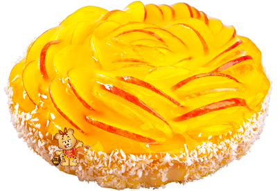

Torta de maçã
Ingredientes
-
RECHEIO:
- Peito de Frango
- 500 de Peito de frango Sadia cozido e desfiado
- 1 colher (sopa) de manteiga cremosa sem sal
- 1 cebola descascada e picada em cubos pequenos
- 1 dente de alho descascado e picado finamente ou amassado
- 1 xícara (chá) de ervilha cozidas
- 12 azeitonas pretas sem caroços picadas
- 3 colheres (sopa) de queijo parmesão ralado
- 1 pote de requeijão
- sal a gosto
- Pimenta-do-reino preta moída a gosto
- 1 xícara (chá) de cheiro-verde picado
- 1 gema
-
MASSA
- 3 xícaras (chá) de farinha de trigo
- 1 colher (café) de sal
- 6 colheres (sopa) de manteiga cremosa sem sal
- 1 ovo
Modo de Preparo
- Numa tigela, misture a farinha, o sal, a margarina e o ovo com as pontas dos dedos;
- Misture bem a farinha com a margarina até ficarem homogêneas. Faça uma bola com a massa, cubra com plástico-filme e reserve na geladeira.
- Recheio:
- Em uma frigideira grande, aqueça a margarina e refogue a cebola e o alho até que dourem;
- Acrescente o frango e refogue, em seguida, junte as ervilhas e as azeitonas e refogue um pouco mais;
- Desligue o fogo, adicione o queijo, o requeijão, o sal, a pimenta e o cheiro-verde e reserve.
- Montagem:
- Divida a massa em três partes iguais e reserve uma delas para cobrir a torta. Junte as outras duas partes e com a ajuda de um rolo, abra a massa entre 2 folhas de plástico-filme;
- Com a ajuda do plástico-filme, transfira a massa aberta para uma forma redonda (22 cm de diâmetro) de fundo removível e forre o fundo e as laterais. Com as mãos, vá arrumando a massa para que cubra toda a forma. Por cima da massa espalhe o recheio;
- Abra a última parte da massa reservada (que será a tampa da torta) também entre 2 folhas de plástico-filme e com a ajuda do rolo;
- Cubra a torta com a massa e retire as aparas das bordas da assadeira;
- Decore a superfície com as aparas de massa retiradas das bordas de forma (fazendo cordões ou bolinhas) e pincele com gema batida;
- Asse a torta por aproximadamente 45 minutos em forno a 200°C, até que fique dourada. Sirva.